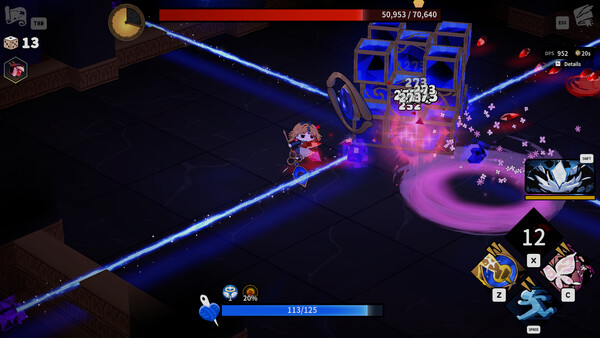

Keyboard & Mouse is the 1.0 default and gives free aiming plus mouse-button skill activation. Keyboard-Only remains in settings and permits mouse navigation in menus. Gamepad remains supported.

Which mode should you use?
| Play style | Recommended mode | Reason |
|---|---|---|
| Magic Scissors / aimed projectiles | Keyboard & Mouse | Free aim makes line-up and release direction explicit. |
| Close-range combo commitment | Either | Choose the mode that lets you move while finishing the chain. |
| Returning Early Access player | Keyboard-Only first | Preserves familiar input while learning 1.0 changes. |
| Controller-first action player | Gamepad | Officially supported. |
How to switch
Open settings and change the control scheme. Exact binding labels can vary with localization, so follow the live settings screen rather than an old key map.
Quick answer
Use Keyboard & Mouse for free aiming and mouse-button actions, Keyboard-Only for a familiar directional rhythm, or Gamepad if controller movement is more consistent. Test the chosen scheme with the actual build input before a long run.
Five-minute setup
- Choose the control scheme in settings.
- Test movement and the full Scissors combo.
- Hold and release one charged action.
- Activate the Spell and Special Skill while moving.
- Open a menu and confirm navigation works.
Input troubleshooting
| Symptom | Check | Fix |
|---|---|---|
| Magic Scissors releases in the wrong direction | Control scheme and cursor position | Use Keyboard & Mouse and aim before charging |
| Combo stops while moving | Conflicting or uncomfortable bindings | Rebind the action or choose the more stable scheme |
| Menu ignores expected input | Active scheme and focus | Use the supported mouse menu control or selected gamepad |
| Old key map does not match | Guide version or localization | Follow the live settings screen |
Version boundary
Official 1.0 notes confirm Keyboard & Mouse as the default, free mouse aiming, mouse-button assignments and continued Keyboard-Only support. Exact key labels can vary, so the current settings screen is authoritative.
Build-specific input rehearsal
For a full-combo Scissors, move around one target and verify that directional input does not accidentally cancel the chain. For Broken Scissors, practice approaching, landing several hits and leaving without losing track of hazards. For Magic Scissors, place the cursor first, hold through the intended gauge and release while movement pressure increases.
Repeat each rehearsal with the Spell and Special Skill. The important question is whether the player can activate the supporting action at the exact moment the weapon becomes unsafe. A comfortable menu binding that fails during movement is not a good combat binding.
Consistency before speed
Reduce simultaneous finger conflicts and prefer a layout the player can repeat. Gamepad, Keyboard-Only and Keyboard & Mouse are supported choices, not skill rankings. If aiming is accurate but movement collapses, lower the complexity or change the scheme. If movement is stable but projectiles miss, use the free-aim option and rehearse cursor placement.
After changing bindings, test one complete room before starting a long progression attempt. Record the live labels if publishing a key map because language and platform presentation can differ.
Control audit after a failed room
Separate tactical failure from input failure. If the correct action was chosen but the player could not activate it while moving, adjust the binding. If the input fired correctly but the timing was unsafe, keep the layout and practice the encounter decision. Changing both controls and loadout at once hides the cause.
For charged builds, record aim direction, charge threshold and whether movement remained available. For combo builds, record where the chain stops. For gamepad, confirm the intended device remains active after menus. These checks create a dependable setup without publishing a brittle universal key map.
One-room rehearsal
Test the Scissors input, Spell and Special Skill together for one complete room after any binding change. The support action must remain reachable exactly when the weapon becomes unsafe. Prefer repeatable movement and activation over a theoretically faster layout that creates finger conflicts. Follow the current settings labels because platform and localization presentation can differ.
The recommended scheme is a player-fit decision, not a performance ranking. Use the current settings screen as the binding authority and retest after updates.
Do one final test while moving under pressure: aim or complete the weapon input, activate the supporting skill and return to movement. If that sequence fails, simplify the binding before continuing story progress.
Frequently asked questions
Does Garden of Witches have keyboard and mouse controls?
Yes. Keyboard and Mouse is the default control scheme in version 1.0 and supports free mouse aiming and mouse-button actions.
Can I still use keyboard-only controls?
Yes. Keyboard-Only Mode remains available in settings, and menus can still be controlled with the mouse.